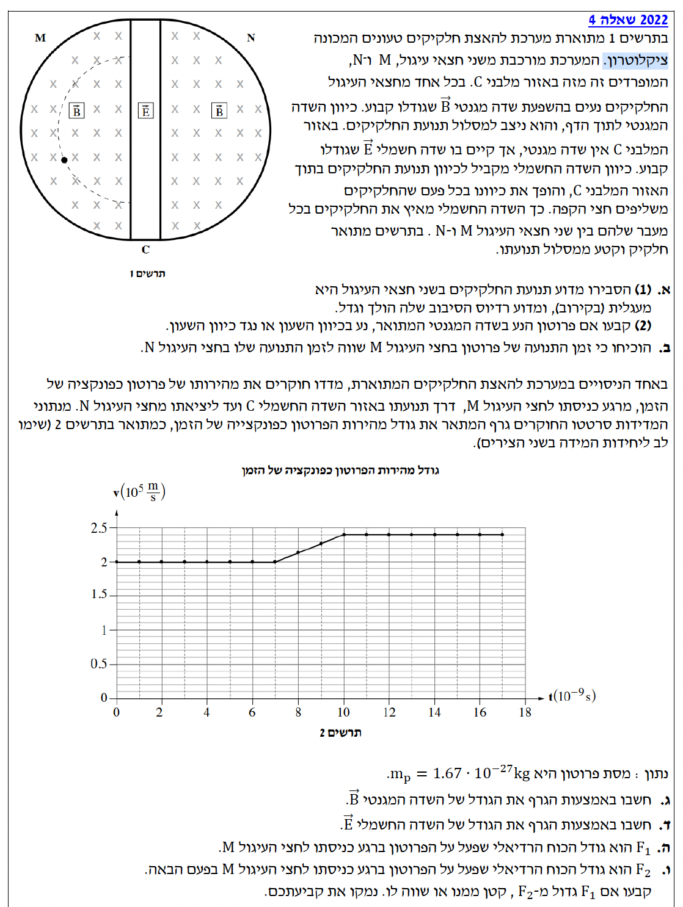

פתרון מודרך: ציקלוטרון
בגרות פיזיקה, חשמל 2022 - שאלה 4
פתרון מלא, צעד-אחר-צעד, כולל הסברים פדגוגיים וניתוח כוחות לתלמידי 5 יח"ל.
עודכן:
--- --:--:--

[תמונת השאלה המקורית]
לא נמצאה תמונה בשם question-image.png באותה תיקייה.
מה נתון:
- מערכת ציקלוטרון הכוללת שני אזורים בצורת חצי עיגול (M, N) וביניהם אזור מלבני C.
- באזורים M ו-N יש שדה מגנטי קבוע המכוון לתוך הדף.
- באזור C יש שדה חשמלי המקביל לכיוון התנועה ומהפך את כיוונו.
מה מחפשים:
להסביר מדוע התנועה בחצאי העיגול היא מעגלית, ומדוע הרדיוס גדל מסיבוב לסיבוב.
נוסחאות ועקרונות בשימוש:
\( F_B = qvB\sin\alpha \)
\( \Sigma F = ma \)
\( a_r = \frac{v^2}{r} \)
משפט עבודה-אנרגיה
פתרון צעד-אחר-צעד:
שלב 1: התנועה במערכת המגנטית
באזורים M ו-N פועל על החלקיק כוח מגנטי. מכיוון שהשדה המגנטי ניצב למהירות החלקיק (\( \alpha = 90^\circ \)), הכוח המגנטי פועל תמיד בניצב לכיוון המהירות. כוח שניצב תמיד למהירות אינו מבצע עבודה, אינו משנה את גודל המהירות, ומהווה כוח צנטריפטלי טהור. לכן התנועה היא בהכרח מעגלית קצובה.
נפתח את הביטוי לרדיוס המסלול מתוך החוק השני של ניוטון:
\[ \Sigma F_R = m \cdot a_R \implies qvB = m \cdot \frac{v^2}{R} \implies R = \frac{mv}{qB} \]
שלב 2: הגדלת הרדיוס באזור ההאצה
בכל פעם שהחלקיק עובר באזור המלבני C, השדה החשמלי מבצע עליו עבודה חיובית המגדילה את האנרגיה הקינטית שלו. כתוצאה מכך, גודל המהירות \( v \) גדל ממעבר למעבר. על פי המשוואה שפיתחנו, המסה \( m \), המטען \( q \) והשדה המגנטי \( B \) קבועים. לכן, הגדלת המהירות \( v \) גוררת בהכרח את הגדלת רדיוס הסיבוב \( R \).
מסקנה: המסלול מעגלי משום שהכוח המגנטי משמש ככוח צנטריפטלי. הרדיוס גדל מסיבוב לסיבוב משום שהשדה החשמלי מגדיל את המהירות, והרדיוס נמצא ביחס ישר למהירות.
💡 טיפ מורה: זכרו את הכלל - שדה מגנטי משנה רק כיוון (מנווט), שדה חשמלי משנה גם גודל (מאיץ)! זוהי תמצית ההבנה של עיקרון הפעולה של הציקלוטרון.
מה נתון:
- כעת נתון כי החלקיק הנע במערכת הוא פרוטון.
- מטען הפרוטון הוא חיובי (\( +q \)).
מה מחפשים:
לקבוע את כיוון התנועה של הפרוטון במערכת (עם או נגד כיוון השעון).
נוסחאות ועקרונות בשימוש:
כלל יד ימין למטען חיובי (כוח לורנץ)
פתרון צעד-אחר-צעד:
כדי לקבוע את כיוון התנועה הכללי, נסתכל על הפרוטון כאשר הוא נמצא באזור M (האזור השמאלי). כדי שהפרוטון יבצע תנועה מעגלית שמרכזה נמצא לימינו (לכיוון אזור ההאצה C), הכוח הרדיאלי הפועל עליו (הכוח המגנטי \( \vec{F}_B \)) חייב להיות מכוון ימינה.
כעת נפעיל את כלל יד ימין למטען חיובי: נכוון את האצבעות (השדה המגנטי) לתוך הדף. נכוון את כף היד (הכוח המגנטי) כך שתדחוף ימינה. במצב זה, האגודל שלנו (המהירות) חייב לפנות כלפי מטה. מכיוון שהחלקיק נע מטה בחלקו השמאלי של המסלול המעגלי, הרי שהוא מקיף את המרכז נגד כיוון השעון.
מסקנה: כיוון התנועה של הפרוטון הוא נגד כיוון השעון.
💡 טיפ מורה: חשוב לזכור שכלל יד ימין (כפי שהפעלנו אותו כאן) נכון ומוגדר עבור מטען חיובי. אם היה מדובר באלקטרון (מטען שלילי), כיוון הכוח המגנטי שהיינו מקבלים היה הפוך, ולכן היינו מקבלים תנועה עם כיוון השעון!
מה נתון:
- הפרוטון מבצע חצאי מעגלים באזורים M ו-N.
- המהירות באזור N גדולה יותר מהמהירות באזור M (בהתאמה, גם הרדיוס גדול יותר).
מה מחפשים:
להוכיח שזמן התנועה בחצי העיגול M שווה לזמן התנועה בחצי העיגול N.
נוסחאות ועקרונות בשימוש:
\( \Sigma F = ma \)
\( F_B = qvB\sin\alpha \)
\( v = \frac{2\pi r}{T} \)
פתרון צעד-אחר-צעד:
נתחיל מבידוד זמן המחזור (הזמן הדרוש להקפה מלאה אחת) מהנוסחה הקינמטית של תנועה מעגלית:
\[ T = \frac{2\pi R}{v} \]
נציב את הביטוי לרדיוס \( R = \frac{mv}{qB} \) שפיתחנו בסעיף הקודם בתוך המשוואה של זמן המחזור:
\[ T = \frac{2\pi}{v} \cdot \left( \frac{mv}{qB} \right) \]
נשים לב שגודל המהירות \( v \) מצטמצם מהמונה והמכנה:
\[ T = \frac{2\pi m}{qB} \]
זמן השהייה בכל חצי עיגול (נסמנו \( t \)) הוא בדיוק מחצית מזמן המחזור המלא:
\[ t = \frac{T}{2} = \frac{\pi m}{qB} \]
ניתן לראות בבירור שהביטוי לזמן התנועה \( t \) תלוי אך ורק בקבועים (המסה \( m \), המטען \( q \) ועוצמת השדה המגנטי \( B \)). הביטוי אינו תלוי במהירות החלקיק \( v \) וגם לא ברדיוס המסלול \( R \). לכן, אף על פי שבאזור N הפרוטון נע מהר יותר ועובר דרך ארוכה יותר (רדיוס גדול יותר), שני האפקטים הללו מבטלים זה את זה, והזמן נשאר זהה לזמן באזור M.
הזמן לחצי הקפה פותח לביטוי \( t = \frac{\pi m}{qB} \) אשר אינו תלוי במהירות או ברדיוס. לכן הזמנים שווים. מ.ש.ל.
💡 טיפ מורה: תכונה מפתיעה זו של הציקלוטרון (אי-תלות זמן המחזור במהירות) היא הבסיס לפעולתו! בזכותה ניתן להשתמש במקור מתח חילופין בתדירות קבועה כדי להפוך את כיוון השדה החשמלי באזור C בדיוק ברגע הנכון בכל פעם שהפרוטון מגיע למרווח.
מה נתון:
- מתוך הגרף, הזמן שבו המהירות נשארת קבועה (זמן השהייה באזור M) מ-\( t=0 \) עד \( t = 7 \cdot 10^{-9} \text{ s} \).
- זמן שהייה: \( t_M = 7 \cdot 10^{-9} \text{ s} \).
- מסת הפרוטון (מדף נוסחאות): \( m_p = 1.67 \cdot 10^{-27} \text{ kg} \).
- מטען הפרוטון (מדף נוסחאות): \( q = 1.6 \cdot 10^{-19} \text{ C} \).
מה מחפשים:
את גודל השדה המגנטי \( B \).
נוסחאות ועקרונות בשימוש:
הוצאת נתונים מגרף קולו
הסתמכות על הפיתוח מסעיף ב'
פתרון צעד-אחר-צעד:
נשתמש במשוואה שפיתחנו בסעיף ב' עבור זמן השהייה בחצי מעגל, ונבודד מתוכה אלגברית את גודל השדה המגנטי \( B \):
\[ t = \frac{\pi m}{qB} \implies B = \frac{\pi m}{q t} \]
נציב את הנתונים המומרים ליחידות MKS (קילוגרמים, קולונים, שניות):
\[ B = \frac{\pi \cdot 1.67 \cdot 10^{-27}}{1.6 \cdot 10^{-19} \cdot 7 \cdot 10^{-9}} \]
נבצע את החישוב:
\[ B = \frac{5.246 \cdot 10^{-27}}{11.2 \cdot 10^{-28}} \approx 4.68 \text{ T} \]
גודל השדה המגנטי הוא: \( B = 4.68 \text{ T} \)
💡 טיפ מורה: סכנה בגרפים! שימו לב היטב לכותרות הצירים בגרפים בבגרות. הציר האופקי כופל את המספרים ב-\( 10^{-9} \) והציר האנכי מכפיל ב-\( 10^5 \). שכחה של חזקות אלו היא הטעות הנפוצה ביותר בסעיף זה!
מה נתון:
- זמן כניסה לאזור C: \( t_1 = 7 \cdot 10^{-9} \text{ s} \).
- מהירות כניסה: \( v_1 = 2 \cdot 10^5 \text{ m/s} \).
- זמן יציאה: \( t_2 = 10 \cdot 10^{-9} \text{ s} \).
- מהירות יציאה: \( v_2 = 2.4 \cdot 10^5 \text{ m/s} \).
- פרק הזמן: \( \Delta t = 3 \cdot 10^{-9} \text{ s} \).
- השינוי במהירות: \( \Delta v = 0.4 \cdot 10^5 \text{ m/s} \).
מה מחפשים:
את גודל השדה החשמלי \( E \) המאיץ את הפרוטון באזור C.
נוסחאות ועקרונות בשימוש:
\( a = \frac{\Delta v}{\Delta t} \)
\( \Sigma F = ma \)
\( \vec{E} = \frac{\vec{F}}{q} \)
פתרון צעד-אחר-צעד:
בשלב הראשון, נחשב את תאוצת הפרוטון בהיותו באזור השדה החשמלי. מתוך גרף המהירות-זמן ניתן לראות שהשיפוע קבוע, ולכן התאוצה קבועה:
\[ a = \frac{\Delta v}{\Delta t} = \frac{0.4 \cdot 10^5}{3 \cdot 10^{-9}} \approx 1.333 \cdot 10^{13} \text{ m/s}^2 \]
הכוח היחיד הפועל על החלקיק באזור המלבני (כאשר מזניחים את כוח הכובד שהוא זניח לחלוטין ברמת החלקיקים) הוא הכוח החשמלי. נשתמש בחוק השני של ניוטון:
\[ \Sigma F = qE = ma \implies E = \frac{ma}{q} \]
נציב את הנתונים:
\[ E = \frac{1.67 \cdot 10^{-27} \cdot 1.333 \cdot 10^{13}}{1.6 \cdot 10^{-19}} \]
נחשב:
\[ E \approx 139,166 \text{ N/C} \approx 1.39 \cdot 10^5 \text{ N/C} \]
גודל השדה החשמלי הוא: \( E = 1.39 \cdot 10^5 \text{ N/C} \)
💡 טיפ מורה: תאוצה קבועה בגרף מהירות-זמן מתבטאת בקו ישר (שיפוע קבוע). הדבר תואם למודל הפיזיקלי שלנו - השדה החשמלי קבוע, ולכן הכוח קבוע והתאוצה קבועה! עקביות בין הגרף לתיאוריה היא סימן מצוין שאתם בכיוון הנכון.
מה נתון:
- מהירות החלקיק בכניסה ל-M (\(t=0\)): \( v_1 = 2 \cdot 10^5 \text{ m/s} \).
- השדה המגנטי (מסעיף ג'): \( B = 4.68 \text{ T} \).
- מטען הפרוטון: \( q = 1.6 \cdot 10^{-19} \text{ C} \).
מה מחפשים:
את גודל הכוח הרדיאלי \( F_1 \) שפועל על הפרוטון בכניסתו לחצי העיגול M.
נוסחאות ועקרונות בשימוש:
\( F_B = qvB\sin\alpha \)
פתרון צעד-אחר-צעד:
הכוח הרדיאלי הפועל על החלקיק בחצי העיגול הוא הכוח המגנטי. כיוון התנועה ניצב לכיוון השדה המגנטי, לכן הזווית \( \alpha = 90^\circ \) ו-\( \sin(90^\circ) = 1 \).
\[ F_1 = q \cdot v_1 \cdot B \]
נציב את הערכים הידועים:
\[ F_1 = 1.6 \cdot 10^{-19} \cdot 2 \cdot 10^5 \cdot 4.68 \]
נבצע את החישוב הסופי:
\[ F_1 = 1.498 \cdot 10^{-13} \text{ N} \approx 1.5 \cdot 10^{-13} \text{ N} \]
גודל הכוח הרדיאלי הוא: \( F_1 = 1.5 \cdot 10^{-13} \text{ N} \)
💡 טיפ מורה: תלמידים נוטים לעתים לנסות לחשב את הכוח הרדיאלי דרך הנוסחה הקינמטית \( \Sigma F = \frac{mv^2}{R} \). למרות שזה נכון פיזיקלית, תזדקקו קודם לחשב את הרדיוס R בנפרד! שימוש ישיר בחוק כוח לורנץ \( F = qvB \) מקצר את הדרך ומונע שגיאות חישוב מיותרות.
מה נתון:
- \( F_1 \) הוא הכוח בכניסה הראשונה לאזור M.
- \( F_2 \) הוא הכוח בכניסה בפעם הבאה.
- במעבר בין שתי הכניסות, הפרוטון הואץ פעמיים באזור C.
מה מחפשים:
לקבוע האם \( F_1 \) גדול מ- \( F_2 \), קטן ממנו, או שווה לו, ולנמק.
נוסחאות ועקרונות בשימוש:
\( F_B = qvB\sin\alpha \)
משפט עבודה-אנרגיה
פתרון צעד-אחר-צעד:
כפי שלמדנו בסעיפים הקודמים, בכל פעם שהפרוטון עובר באזור המלבני C, השדה החשמלי מבצע עליו עבודה חיובית והאנרגיה הקינטית שלו גדלה (משפט עבודה ואנרגיה). כתוצאה מכך, גודל מהירותו עולה.
כאשר הפרוטון יחזור לאזור M בפעם הבאה, הוא כבר הואץ, ולכן מהירותו החדשה \( v_2 \) תהיה גדולה ממהירותו ההתחלתית \( v_1 \) (\( v_2 > v_1 \)).
הכוח הרדיאלי הפועל עליו מוגדר על ידי נוסחת כוח לורנץ \( F = qvB \). מכיוון שמטען הפרוטון \( q \) והשדה המגנטי \( B \) הם קבועים, הכוח המגנטי נמצא ביחס ישר לגודל המהירות.
מכיוון שהמהירות גדלה, בהכרח גם הכוח המגנטי המופעל עליו גדל. לכן, נקבל כי \( F_2 > F_1 \).
קביעה: \( F_1 \) קטן מ-\( F_2 \).
נימוק: הכוח יחסי למהירות (\( F = qvB \)), והמהירות גדלה עקב ההאצה באזור C.
💡 טיפ מורה: זהו סעיף הבנה קלאסי. לא נדרש כאן חישוב מספרי מסובך, אלא הבנה עמוקה של התלות בין משתנים. מומלץ תמיד לכתוב את הנוסחה המקשרת (\( F=qvB \)) ולהראות למעריך הבחינה בבירור איזה משתנה השתנה ואיזה נשאר קבוע!